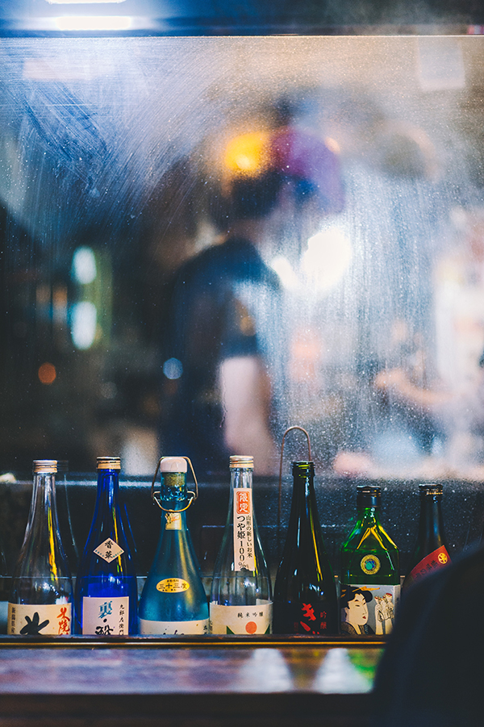
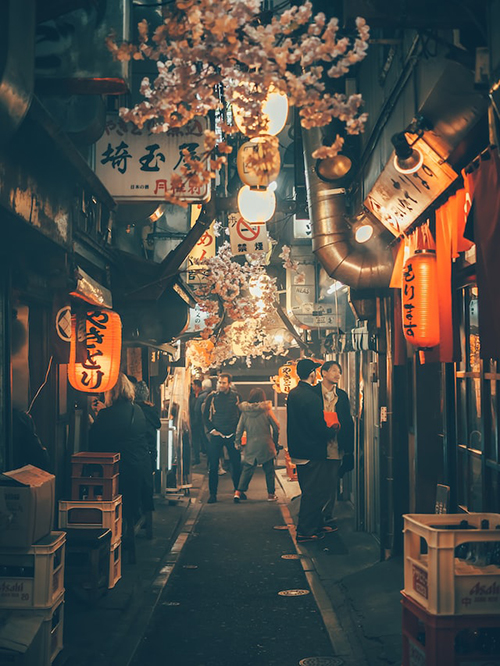

Ebisu is a major district and neighborhood of the Special Ward of Shibuya-ku. It is located south of Shibuya and north of Meguro. Ebisu was founded around 1928 as a community developed around the Japan Beer Brewery Company (now Sapporo Breweries Limited) facilities which began brewing Yebisu Beer in 1890. After the breweries were moved to Chiba in 1988, the area underwent a major urban development resulting in the construction of Yebisu Garden Place, which opened to the public in 1994. Following the construction of Yebisu Garden Place in 1994, the area around Ebisu Station developed rapidly. The district and railway station of Ebisu takes its name from the Yebisu Beer brand, which in turn was named after Ebisu (one of the Japanese Seven Gods of Fortune). The spelling "Yebisu" is intentionally archaic. With or without the "y" the pronunciation is the same as "Ebisu"
Ebisu has a high concentration of restaurants, cafés, izakaya, ramen shops, bars and old-fashioned tachinomi "stand and drink" bars.
Spending a few hours over food and drink at an izakaya (Japanese-style gastropub) is a great way to start your night out and mingle with locals in a relaxed setting.Beyond its countless bars and izakayas, Ebisu is also home to a great collection of stylish watering holes, including many old-school pubs and trendy tachinomiya. For a crash course in old-school Japanese nightlife, take a peek into the raucous Ebisu Yokocho.
Catering particularly to hip Tokyoites in their 30s and early 40s (though naturally not in the least limited to this demographic), Ebisu is also one of the best places in Tokyo to indulge in the izakaya experience.
